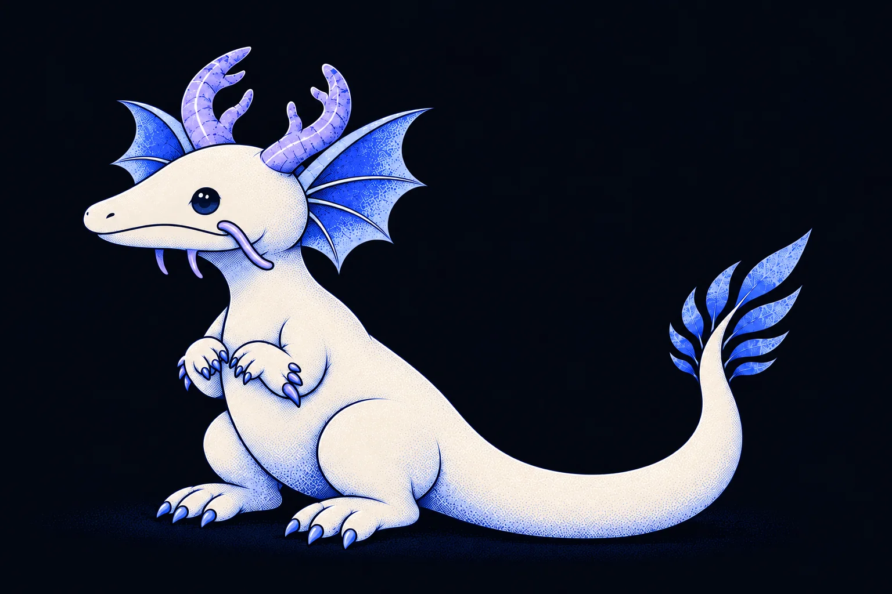
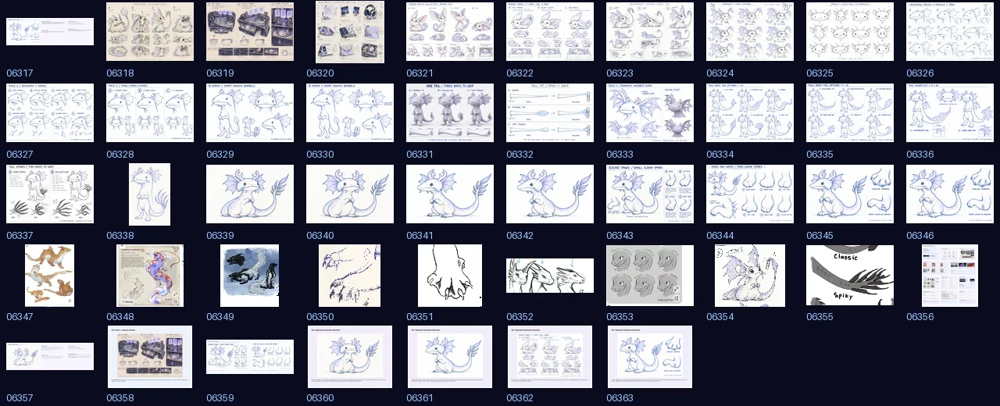
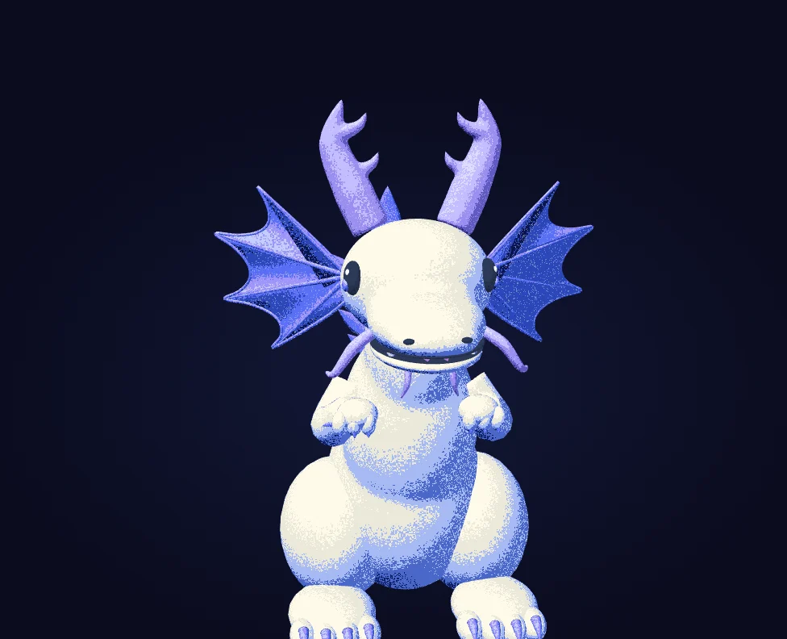
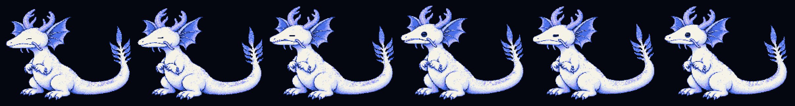

Portfolio Pet
Concept, character design + Blender model · 10 animated scenes from one model · 2026

I wanted something on my portfolio no template could give it.
Sites were starting to look vibe-coded. I'm a designer, not an animator, so I asked: how might I use AI as a workhorse for animation and concept art without letting it replace my hand?
He started in my notebook.
I sketched three routes: a rabbit whose tail grips like a hand, a lizard with a hard tail, and the one I kept, with reindeer horns, webbed ears, axolotl whiskers and a leaf-like tail.
I set his world before his style.
He lives in a desk drawer on a dark, smoked-glass site. Of six rendering studies, I kept pixel art because it matched the site's rooms.
I wrote his anatomy down, because AI forgets it.
Four toes on each hind paw, nine tail blades, whiskers above the mouth, three spines on each forearm. AI drew 47 concept images to those rules, and I directed every revision.




My Blender model is the answer key.
I modelled his body in Blender; AI wrote the bones and actions. Every pose is set on the model first, so his body line and paw contacts are right before anything is drawn.



The model catches what AI invents.
Each AI drawing is laid over the model from the same camera: red marks invented parts, yellow marks dropped ones. Two takes of one pose drew eight tail blades; only the take with nine shipped.
One model, ten scenes, no frame drawn by hand.
Approved drawings become pixel frames in the site's palette. He wakes in the hero, climbs out of the About drawer, plays four loading screens and sits under the gallery wall.


I staged the link preview in Blender, then painted it back to 2D.
My first cover's perspective looked wrong, so I had the drawer, his hoard and my s0mped keychain built at real scale in Blender to fix height, depth and placement. The scene then went back to pixels: rendering him straight from Blender is too taxing.

AI did the labour. The rules stayed mine.
Write the rules down.
AI never remembered his toe count. A written anatomy list and a model to check against did.
Check with geometry, then taste.
Overlap with the model catches wrong poses and missing parts. Claws, pads and spines still get checked by eye.
Keep the drawn warmth.
I tried rendering frames straight from Blender and dropped it: it lost the warmth of the drawing. The model guides; the drawing ships.
AI image tools drew the master illustration and key poses from my sketch, anatomy rules and model poses. Claude and Codex wrote the rig, the Blender scene scripts, frame tools and site code. I made the sketches, the Blender model and every motion idea, and approved or rejected every frame. See all 7,008 saved frames →